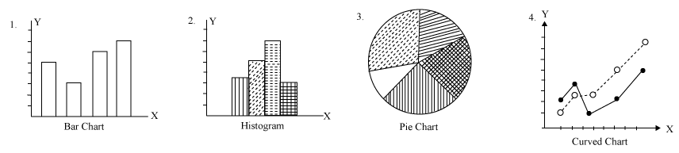
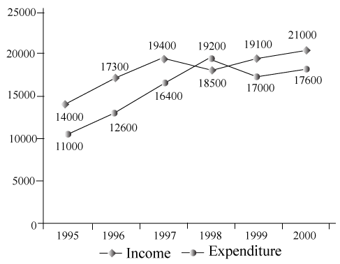
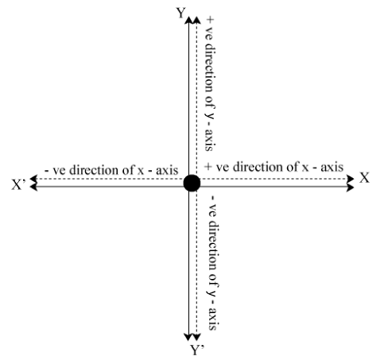

Under the head of DI, analysis of pictorial representation of data can be taken place. Some of them are given below
For having a good command over this section you are advised, to be friendly with some of the concern chapters like Average, Ratio and Proportion, Percentage etc. Some of them with their highlights are given below.
Essential facts related to pie graph.
Directions (Q.Nos. 1 and 2) Refer to the following bar charts and answer the questions that follow.
The percentage increase in sales from 2001 to 2002 was
Solution:
Percent increase in sales
\( \frac{40 - 18}{18} \times 100 = \frac{22}{18} \times 100 \approx 122 \% \)
The two years between which the rate of change of cellular phones is minimum are
Solution:
Rate of change
\( \begin{align} 1997 - 98 = \frac{8}{48} \times 100 = 16.6 \% \\\\[6pt]
1999 - 2000 = \frac{5}{30} \times 100 = 16.6 \% \\\\[6pt]
2001 - 2002 = \frac{22}{18} \times 100 = 122 \% \end{align} \)
Directions (Q.Nos. 3 and 4) Refer to the data below and answer the questions that follow. The following figure gives the average monthly income and expenditure of a person over six years.
In the year 1998, by how much did the person's saving get depleted ?
Solution:
Average monthly saving for the year 1998
= (19200 - 18500) = 700
Hence, annual saving = 700 \( \times \) 12 = 8400
What is average increase in expenditure of the person between 1995 and 2000 ?
Solution:
Monthly expenses in 1995 = 11,000 and monthly expenses in 2000 = 17,600.
Let the cumulative increase be r% then,
\( 17,600 = 11,000 (1 + r)^5 \Rightarrow 1.6 = (1 + r)^5 \)
Now using options, we find that value of r can be 10%.
The logarithm of a number x with respect to base b is the exponent by which b must be raised to yield x. Thus, the logarithm of x to the base b is the solution y to the equation \( b^y = x \) . The logarithm is denoted as \( 'log_b (x)' \) .
If \( log_a bc = x, \ log_b ca = y \) and \( log_c ab = z \) , then the value of \( \frac{1}{x + 1} + \frac{1}{y + 1} + \frac{1}{z + 1} \) is equal to
Solution:
\( Since, \ log_a bc = x \)
\( \begin{align} \therefore x + 1 = (log_a bc) + 1 = log_a bc + log_a a = log_a abc \\\\[6pt]
similarly, \ we \ have \ y + 1 = log_b abc \ and \ z + 1 = log_c abc \\\\[6pt]
\therefore \frac{1}{x + 1} = \frac{1}{log_a abc} = log_{abc} a \\\\[6pt]
and \ similarly, \ \frac{1}{y + 1} = log_{abc} b \ and \ \frac{1}{z + 1} = log_{abc} c \\\\[6pt]
\therefore \frac{1}{x + 1} + \frac{1}{y + 1} + \frac{1}{z + 1} = log_{abc} a + log_{abc} b + log_{abc} c = log_{abc} (abc) = 1 \\\\[6pt]
Hence, \ \frac{1}{x + 1} + \frac{1}{y + 1} + \frac{1}{z + 1} = 1 \end{align} \)
If \( a^2 + b^2 = 7ab \) , then the value of \( log \left [ \frac{1}{3} (a + b) \right ] \) is
Solution:
since,
\( \begin{align} a^2 + b^2 = 7ab \ \ \therefore a^2 + b^2 + 2ab = 9ab \\\\[6pt]
\Rightarrow \frac{(a + b)^2}{9} = ab \end{align} \)
On taking log on both sides, we get
\( \begin{align} log \left ( \frac{a + b}{3} \right )^2 = log ab \\\\[6pt]
\Rightarrow 2 log \left [ \frac{1}{3}(a + b) \right ] = log a + log b \\\\[6pt]
\Rightarrow log \left [ \frac{1}{3}(a + b) \right ] = \frac{1}{2} (log a + log b) \end{align} \)
If a, b and c are in G.P, then \( log_a x, \ log_b x \) and \( log_c x \) will be
Solution:
Here, also as a, b and c are in G.P.
we have, \( b^2 = ac \) ........ (i)
Now, let \( log_a x = u, \ log_b x = v, \ log_c x = w \)
\( \begin{align} \Rightarrow x = a^u, \ x = b^v, \ x = c^w \\\\[6pt]
\Rightarrow a^u = b^v = c^w = x \end{align} \) ........ (ii)
\( \begin{align} \Rightarrow u log a = v log b = w log c = log x \\\\[6pt]
\Rightarrow log a = \frac{log x}{u}, \ log b = \frac{log x}{v}, \ log c = \frac{log x}{w} \end{align} \) ....... (iii)
From Eq. (i) we have,
2 log b = log a + log c ....... (iv)
From Eqs. (iii) and (iv), we get
\( \begin{align} \frac{2 log x}{v} = log x \left ( \frac{1}{u} + \frac{1}{w} \right ) \\\\[6pt]
\Rightarrow \frac{2}{v} = \frac{1}{u} + \frac{1}{w} \Rightarrow \end{align} \) u, v and w are in H.P.
Hence, \( log_a x, \ log_b x \) and \( log_c x \) are in H.P.
A set of mn numbers (real or complex) in the form of m horizontal lines (called rows) and n vertical lines (called columns), is called an m \( \times \) n matrix or rectangular matrix (to be read as m by n matrix).
A order of m \( \times \) n matrix is usually written as
\( \begin{align} \left [ \begin{array}{cccc} a_{11} & a_{12} & ... & a_{1n} \\\\ a_{21} & a_{22} & ... & a_{2n} \\\\ ... & ... & ... & ... \\\\ a_{m1} & a_{m2} & ... & a_{mn} \end{array} \right ] \end{align} \)
A matrix may be represented by the symbols \( [a_{ij}], \ (a_{ij}), \ |a_{ij}| \) or by a capital letter A.
i.e., \( A = [a_{ij}]_{m \times n} \) or \( (a_{ij})_{m \times n} \) or \( || a_{ij} ||_{m \times n} \)
A matrix is not a number. It has no numerical value.
Find x, y, z and w, if
\( \begin{align} \left [ \begin{array}{ccc} 3x & y \\\\ 2z & 3w \end{array} \right ] = \left [ \begin{array}{ccc} x + 4 & x - y \\\\ z + w & z - w + 3x \end{array} \right ] \end{align} \)
Solution:
The matrix on each side is of order 2 \( \times \) 2.
On equating the corresponding elements, we get
3x = x + 4 \( \Rightarrow \) 2x = 4 \( \Rightarrow \) x = 2
y = x - y \( \Rightarrow \) 2y = x = 2 \( \Rightarrow \) y = 1
2z = z + w \( \Rightarrow \) z = w
3w = z - w + 3x \( \Rightarrow \) z = 4w - 6
On substituting w in terms of z, we get
z = 4z - 6 \( \Rightarrow \) 3z = 6 \( \Rightarrow \) z = 2
Hence, we obtain x = 2, y = 1, z = 2 and w = 2
If the least number of zeroes in a lower triangular matrix is 10, then what is the order of the matrix?
Solution:
If the least number of zeroes in a lower triangular matrix is 10, then order of the matrix is 4 \( \times \) 4.
If \( \begin{align} A = \left [ \begin{array}{ccc} x & 0 \\\\ y & 0 \end{array} \right ] \end{align} \) and \( \begin{align} B = \left [ \begin{array}{ccc} 0 & 0 \\\\ a & b \end{array} \right ] \end{align} \) are the two matrices, then find AB.
Solution:
\( \begin{align} AB = \left [ \begin{array}{ccc} x & 0 \\\\ y & 0 \end{array} \right ] \ \left [ \begin{array}{ccc} 0 & 0 \\\\ a & b \end{array} \right ] \\\\[6pt] = \left [ \begin{array}{ccc} x \times 0 + 0 \times a & x \times 0 + 0 \times b \\\\ y \times 0 + 0 \times a & y \times 0 + 0 \times b \end{array} \right ] = \left [ \begin{array}{ccc} 0 & 0 \\\\ 0 & 0 \end{array} \right ] \end{align} \)
If \( \begin{align} A = \left [ \begin{array}{ccc} cos \alpha & - sin \alpha \\\\ sin \alpha & cos \alpha \end{array} \right ] \end{align} \) , then find the value of \( A^T A \) .
Solution:
we have \( \begin{align} A^T = \left [ \begin{array}{ccc} cos \alpha & sin \alpha \\\\ - sin \alpha & cos \alpha \end{array} \right ] \end{align} \)
Therefore, \( \begin{align} A^T A = \left [ \begin{array}{ccc} cos \alpha & sin \alpha \\\\ - sin \alpha & cos \alpha \end{array} \right ] \ \left [ \begin{array}{ccc} cos \alpha & - sin \alpha \\\\ sin \alpha & cos \alpha \end{array} \right ] \end{align} \)
\( \begin{align} = \left [ \begin{array}{ccc} cos^2 \alpha + sin^2 \alpha & 0 \\\\ 0 & cos^2 \alpha + sin^2 \alpha \end{array} \right ] = \left [ \begin{array}{ccc} 1 & 0 \\\\ 0 & 1 \end{array} \right ] = I \end{align} \)
Probability is used to indicate a possibility of an event to be occurred. It is often used synonymously with chance.
If in a random experiment there are n mutually exclusive and equally likely elementary events in which m elementary events are favourable to a particular event E, then the probability of the event E is defined as
\( \begin{align} P(E) = \frac{Favourable \ Events}{Total number of Events} \\\\[6pt]
= \frac{n(E)}{n(S)} = \frac{m}{n} \end{align} \)
Two unbiased coins are tossed. What is probability of getting both heads.
Solution:
Here, S = {HH, HT, TH, TT} and E = {HH}
\( \Rightarrow P(E) = \frac{n(E)}{n(S)} = \frac{1}{4} \)
An unbiased dice is tossed. Find the probability of getting an even number.
Solution:
Here, S = {1, 2, 3, 4, 5, 6} and E = {2, 4, 6}
\( \therefore P(E) = \frac{n(E)}{n(S)} = \frac{3}{6} = \frac{1}{2} \)
In a simultaneous throw of a pair of dice, find the probability of getting a total more than 9.
Solution:
Here, n(S) = 6 \( \times \) 6 = 36
Let E = Event of getting a total more than 9.
= {(4, 6), (5, 5), (5, 6), (6, 4), (6, 5), (6, 6)}
\( \therefore P(E) = \frac{n(E)}{n(S)} = \frac{6}{36} = \frac{1}{6} \)
In a simultaneous throw of a pair of dice. Find the probability that the sum of the numbers shown on the two faces is divisible by 5 or 6.
Solution:
Here, n(S) = 6 \( \times \) 6 = 36
Let E = Event of getting a sum of numbers shown on the two faces divisible by 5 or 6.
= {(1, 4), (1, 5), (2, 3), (2, 4), (3, 2), (3, 3), (4, 1), (4, 2), (5, 1), (5, 5), (6, 4), (6, 6)}
\( \therefore P(E) = \frac{n(E)}{n(S)} = \frac{12}{36} = \frac{1}{3} \)
A card is drawn from a well shuffled pack of cards. Find the probability that it is a queen
Solution:
The total number of ways of selecting one card out of 52 cards is \( ^{52}C_1 \) ways.
Let E be the event of drawing a queen card.
Then,
1 queen card can be drawn from 4 queens in \( ^4C_1 \) ways
\( \therefore P(E) = \frac{n(E)}{n(S)} = \frac{^4C_1}{^{52}C_1} = \frac{4}{52} = \frac{1}{13} \)
The number of the form (a + ib), where a and b are real numbers and \( i = \sqrt{-1} \) , are known as complex numbers. The set of all complex numbers is denoted by C.
e.g., Each of the numbers (2 + 5i), \( (- 3 + \sqrt{2} i) \) , \( \left ( \frac{2}{3} - \frac{5}{7} i \right ) \) is a complex number.
For a complex number, z = (a + ib), we have,
a = real part of z, written as Re(z).
and b = imaginary part of z, written as Im (z).
e.g., If z = (5 + 9i), then Re(z) = 5 and Im(z) = 9
A complex number z is said to be
Thus, each of the numbers 2, -7, \( \sqrt{3} \) is purely real.
and each of the numbers 2i, \( ( \sqrt{3i}), \ \left ( \frac{-3}{2} i \right ) \) is purely imaginary.
Conjugate of a complex number z = (a + ib) is defined as \( \overline{z} = (a - ib) \) .
e.g.,
Modulus of a complex number z = (a + ib), denoted by |z|, is defined as \( |z| = \sqrt{a^2 + b^2} \) .
e.g.,
If \( z_1 = a_1 + ib_1 \) and \( Z_2 = a_2 + ib_2 \) , then \( z_1 = z_2 \Leftrightarrow a_1 = a_2 \) and \( b_1 = b_2 \) .
If \( z_1 = (a + ib) \) and \( z_2 = (c + id) \) , we define
If 2y + (3x - y) i = (5 - 2i) find the values of x and y.
Solution:
Equating the real and imaginary parts, we get
2y + (3y - y)i = (5 - 2i) \( \Rightarrow \) 2y = 5 and 3x - y = - 2;
\( \Rightarrow y = \frac{5}{2} \) and \( 3x - \frac{5}{2} = -2; \ y = \frac{5}{2} \) and \( x = \frac{1}{6} \)
Hence, \( x = \frac{1}{6} \) and \( y = \frac{5}{2} \)
Express \( (4 - 3i)^3 \) in the form of (a + ib).
Solution:
We have \( (4 - 3i)^3 = 4^3 - (3i)^3 - 3 \times 4 \times 3i \times (4 - 3i) \)
\( \begin{align} = 64 - 27i^3 - 36i(4 - 3i) = (64 - 108) + i(27 - 144) \\\\[6pt]
= (- 44 - 117i) \ \therefore (4 - 3i)^3 = (- 44 - 117i) \end{align} \)
If \( z = (\sqrt{2} - \sqrt{-3}) \) , then find |z|
Solution:
\( \begin{align} z = (\sqrt{2} - i \sqrt{-3}) \\\\[6pt] |z| = \sqrt{(\sqrt{2})^2 + (- \sqrt{3})^2} = \sqrt{2 + 3} = \sqrt{5} \end{align} \)
Find the least positive integer value of m for which
\( \left ( \frac{1 + i}{1 - i} \right )^m = 1 \)
Solution:
We have
\( \begin{align} \frac{1 + i}{1 - i} = \left ( \frac{1 + i}{1 - i} \right ) \times \left ( \frac{1 + i}{1 + i} \right ) \\\\[6pt]
= \left ( \frac{1 + i}{1^2 - i^2} \right )^2 = \frac{1 + i^2 + 2i}{2} = \frac{2i}{2} = i \\\\[6pt]
\therefore \left ( \frac{1 + i}{1 - i} \right )^m = 1 \Rightarrow i^m = 1 \\\\[6pt]
clearly, \ m = 4 \end{align} \)
sign consideration for different quadrants
note
The perpendicular distance between two parallel lines 3x + 4y - 6 = 0 and 6x + 8y + 7 = 0 is equal to
Sol.
The distance between two lines
\( = \left | \frac{6 - \left(- \frac{7}
{2} \right )}{\sqrt{3^2 + 4^2}} \right | = \left | \frac{6 + \frac{7}{2}}{{5}} \right | = \frac{19}{10} \) unit
The locus of a point which is equidistant from point (4, 2) and x-axis is
Sol.
Let the coordinate of point is (h, k)
.
Then, according to the question, \( \sqrt{(h - 4)^2 + (k - 2)^2} = k \)
\( \begin{align} \Rightarrow (h - 4)^2 + (k - 2)^2 = k^2 \\\\[3pt]
h^2 - 8h + 16 + k^2 - 4k + 4 = k^2 \\\\[3pt]
h^2 - 8h - 4k + 20 = 0 \end{align} \)
Hence, the required locus is \( x^2 - 8x - 4y + 20 = 0 \)
If points (5, 5), (10, k) and (-5, 1) are collinear, then 1 value of k is
Sol.
The given points are collinear
\( \begin{align} \left| \begin{array}{ccc} 5 & 5 & 1 \\\\ 10 & k & 1 \\\\ -5 & 1 & 1 \end{array} \right| = 0 \end{align} \)
\( \Rightarrow \) 5(k - 1) - 5(10 + 5) + 1(10 + 5k)
5k - 5 - 75 + 10 + 5k = 0
\( \Rightarrow \) 10k = 70
\( \therefore \) k = 7
The incentre of triangle formed by lines x = 0, y = 0 and 3x + 4y = 12 is
Sol.
The vertices of a triangle formed by the line A(0, 0). B(0, 3) and C(4, 0).
\( \therefore \) a = 5, b = 4 and c = 3
Where, a, b and c are sides of \( \triangle{ABC}. \) Hence, the incentre of \( \triangle{ABC} \) is
\( \begin{align} \left( \frac{ax_1 + bx_2 + cx_3}{a + b + c }, \ \frac{ay_1 + by_2 + cy_3}{a + b + c} \right) \\\\[3pt]
= \left( \frac{5.0 + 4.0 + 3.4}{5 + 4 + 3 }, \ \frac{5.0 + 4.3 + 3.0}{5 + 4 + 3} \right) \\\\[3pt]
= \left(\frac{12}{12}, \ \frac{12}{12} \right) = (1, \ 1) \end{align} \)